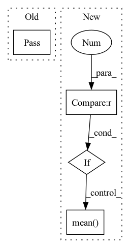

Pattern ID :2706

Before Change
super().__init__()
def forward(self, x, padding):
pass
class QuantizerEncoder(nn.Module):
def __init__(self, m: int, k: int, d: int):
After Change
class PostProcess(nn.Module):
def forward(self, x: torch.Tensor, cAndPadding: torch.Tensor) -> torch.Tensor:
x = x[:, :, cAndPadding[3]:(-cAndPadding[4]), cAndPadding[1]:(-cAndPadding[2])]
if cAndPadding[0] == 1:
x = x.mean(1, keepdim=True)
return (x + 1) / 2
class QuantizerEncoder(nn.Module):
In pattern: SUPERPATTERN
Frequency: 3
Non-data size: 4
Instances
Fragment ID: 15156967
Project Name: xiaosu-zhu/mcquic
Commit Name: 5eab1f3405e52a0cf81c11777abe1eafeb655b59
Time: 2021-10-08
Author: xiaosu.zhu@outlook.com
File Name: src/mcqc/evaluation/refModel.py
M Class Name: PostProcess
N Class Name: PostProcess
M Method Name: forward(3)
N Method Name: forward(3)
M Parent Class: nn.Module
N Parent Class: nn.Module
M File Name: src/mcqc/evaluation/refModel.py
N File Name: src/mcqc/evaluation/refModel.py
M Start Line: 40
M End Line: 41
N Start Line: 42
N End Line: 46
'>
Before Change
Returns:
pass
@classmethod
def to_display(cls, x):
r
After Change
Returns:
if pred.ndim != 5 or target.ndim != 5:
raise ValueError(f"{self.NAME} expects 5-D inputs!")
value = self.criterion(pred, target)
return value.sum(dim=(4, 3, 2)).mean(dim=1).mean(dim=0)
def reshape_clamp(self, pred: torch.Tensor, target: torch.Tensor):
r
'>
Fragment ID: 15156966
Project Name: ais-bonn/vp-suite
Commit Name: 4b7d4c54cdaa9147f544bc843a9d471c611c875f
Time: 2022-02-22
Author: boltres@ais.uni-bonn.de
File Name: vp_suite/base/base_measure.py
M Class Name: BaseMeasure
N Class Name: BaseMeasure
M Method Name: forward(3)
N Method Name: forward(3)
M Parent Class: nn.Module
N Parent Class: nn.Module
M File Name: vp_suite/base/base_measure.py
N File Name: vp_suite/base/base_measure.py
M Start Line: 23
M End Line: 33
N Start Line: 24
N End Line: 37
'>
Before Change
@abstractmethod
def forward(self, *inputs: torch.Tensor) -> torch.Tensor:
pass
@abstractmethod
def loss_function(self, *inputs: Any, **kwargs) -> torch.Tensor:
pass
After Change
**kwargs) -> Dict[Union[ChannelEnum, str], torch.Tensor]:
input, norm_consts = self.assemble_input(data)
if self.num_samples > 1:
samples = []
for i in range(self.num_samples):
samples.append(self.forward_pass(input=input, data=data))
mean = torch.mean(torch.stack(samples), dim=0)
var = torch.var(torch.stack(samples), dim=0)
output = {ChannelEnum.RECONSTRUCTED_ELEVATION_MAP: mean,
ChannelEnum.MODEL_UNCERTAINTY_MAP: var}
'>
Fragment ID: 15156962
Project Name: mstoelzle/solving-occlusion
Commit Name: 0845934f79262774ac310af9512f495ff8deba9f
Time: 2020-12-09
Author: maximilian@stoelzle.ch
File Name: src/learning/models/base_model.py
M Class Name: BaseModel
N Class Name: BaseModel
M Method Name: forward(2)
N Method Name: forward(1)
M Parent Class: ABC,nn.Module
N Parent Class: ABC,nn.Module
M File Name: src/learning/models/base_model.py
N File Name: src/learning/models/base_model.py
M Start Line: 38
M End Line: 39
N Start Line: 39
N End Line: 61